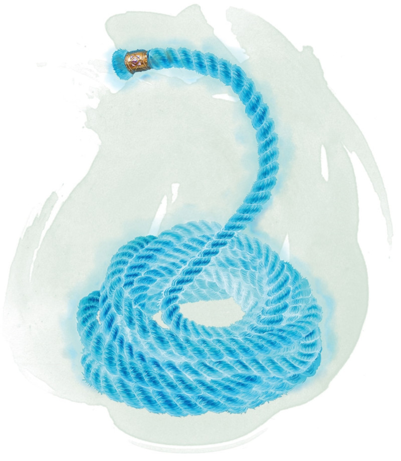

Corde d'enchevêtrement
Objet merveilleux, rare
Cette corde est longue de 9 mètres et pèse 1,5 kg. Si vous tenez un bout de la corde et utilisez votre action pour prononcer le mot de commande, l'autre extrémité se précipite vers une créature que vous pouvez voir et se trouvant à 6 mètres de vous maximum pour l'enchevêtrer. La cible doit réussir un jet de sauvegarde de Dextérité DD 15 sous peine d'être entravée.
Vous pouvez relâcher la créature en utilisant votre action bonus pour prononcer un second mot de commande. Une créature entravée par la corde peut utiliser une action pour effectuer un jet de Force ou de Dextérité (au choix de la cible) DD 15. En cas de réussite, la créature n'est plus entravée par la corde.
La corde possède une CA de 20 et 20 points de vie. Elle récupère 1 point de vie toutes les 5 minutes aussi longtemps qu'il lui reste au moins 1 point de vie. Si la corde tombe à 0 point de vie, elle est détruite.
Vous pouvez relâcher la créature en utilisant votre action bonus pour prononcer un second mot de commande. Une créature entravée par la corde peut utiliser une action pour effectuer un jet de Force ou de Dextérité (au choix de la cible) DD 15. En cas de réussite, la créature n'est plus entravée par la corde.
La corde possède une CA de 20 et 20 points de vie. Elle récupère 1 point de vie toutes les 5 minutes aussi longtemps qu'il lui reste au moins 1 point de vie. Si la corde tombe à 0 point de vie, elle est détruite.
Dungeon Master´s Guide (SRD)
